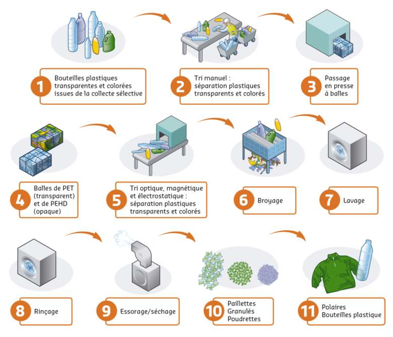

Deux méthodes pour valoriser les déchets plastiques
Valorisation énergétique
La valorisation énergétique consiste à transformer un déchet en énergie thermique et ceci grâce à son potentiel calorifique. Cette énergie sera utilisée pour la production de chaleur et/ou d'électricité.
La valorisation énergétique s'applique à tous les types de plastiques et surtout à ceux qui n'ont pas été triés ou qui ont été contaminés par d’autres déchets ou qui sont composés d'un mélange de polymères.
L’incinération des ordures ménagères est parfois aidée par la présence des déchets plastiques, sans lesquels il faudrait injecter dans l’incinérateur du fioul pour permettre une bonne combustion.
Valorisation matière ou recyclage
Le recyclage est un procédé de traitement des matériaux qui permet de réintroduire la matière du déchet, sans destruction de sa structure chimique, dans la production d’un nouvel objet.
Il est possible de recycler les déchets en matières plastiques après leur fragmentation (recyclage mécanique) ou après leur dissolution
.
Created with the Personal Edition of HelpNDoc: Single source CHM, PDF, DOC and HTML Help creation